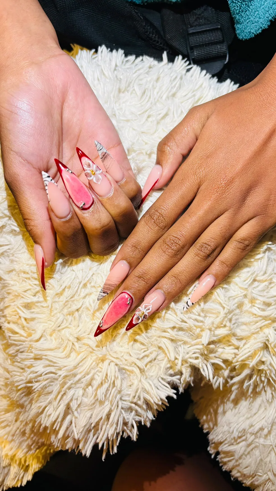
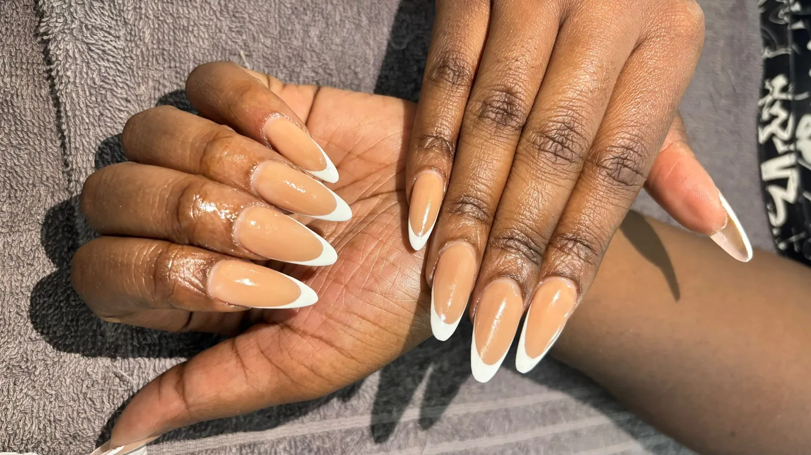
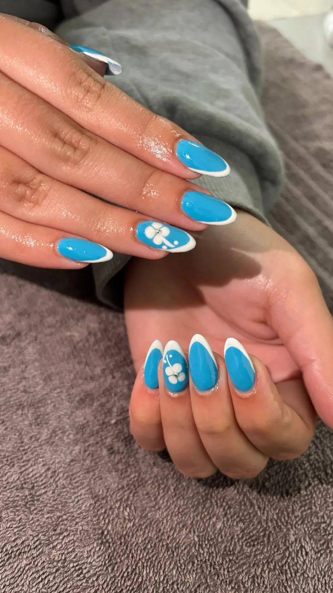
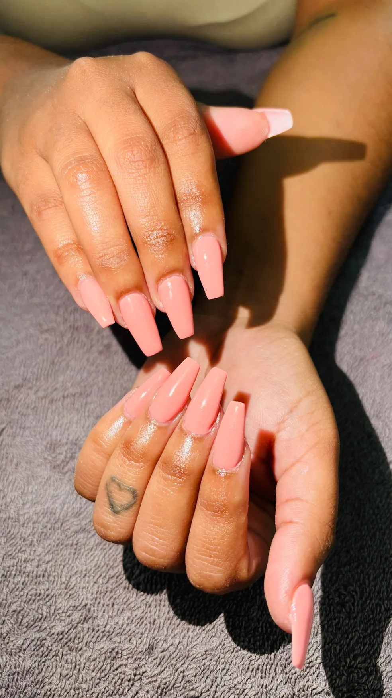
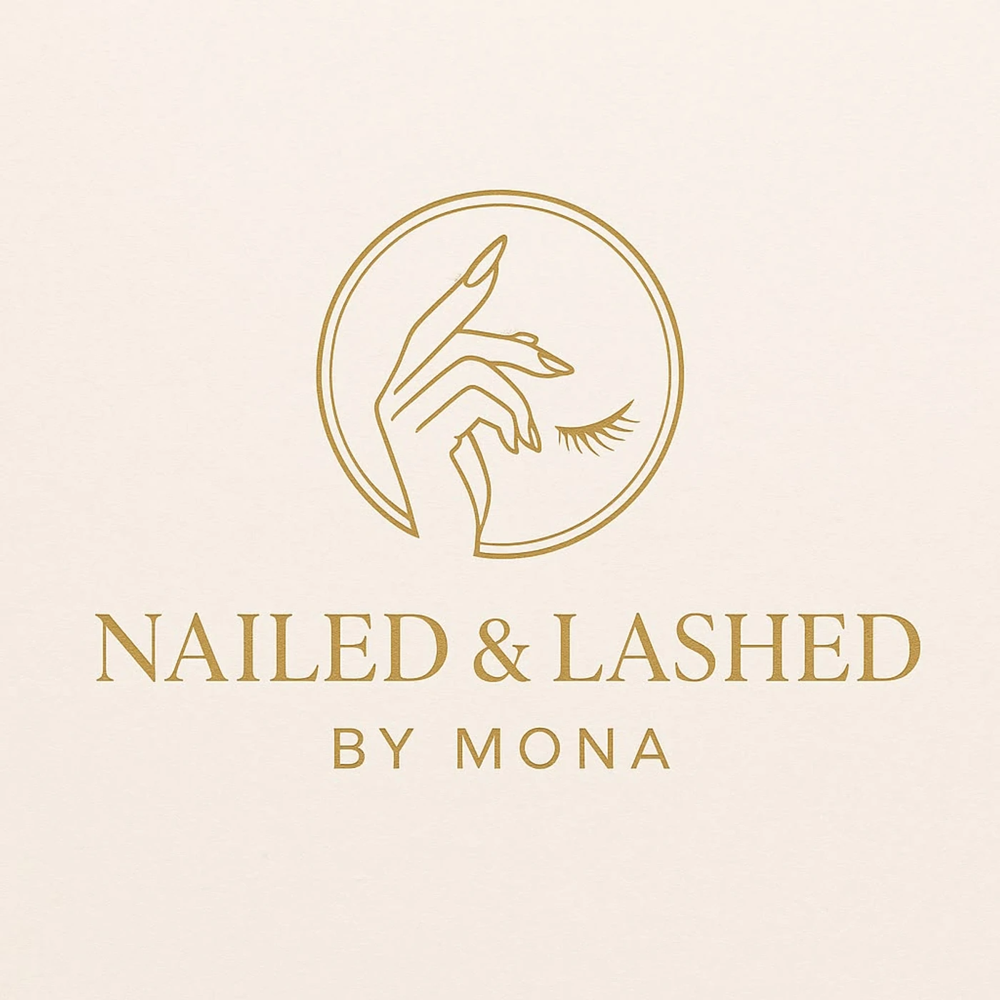

NAILED & Lashed by Mona · Windhoek · 2026
A beauty business,
turned into a living studio.
A mobile-first booking experience, visual lookbook and private operations desk—designed to move Mona’s clients from inspiration to a confirmed appointment without losing the personality of her work.
StrategyIdentity systemUX/UIFull-stack buildCloud launch

The brief
Luxury energy.
Zero booking friction.
Mona needed more than a brochure. The business serves clients from Khomasdal and through house calls, accepts multiple payment methods, and relies on visual trust. The new experience had to make all of that feel effortless on the device clients actually use.
We built one coherent journey: explore real work, understand transparent starting prices, choose a studio visit or mobile route, request a slot, then let Mona run the business from a protected dashboard.

✦
“Sophisticated, simple and alive.”
The visual system pairs pearl cream, ink black, salon gold and a playful blush accent with expressive typography and tactile motion.


The experience architecture
One seamless loop.
Discover
Real photography, tactile galleries and short-form reveals establish trust quickly.
Choose
Service, duration, starting price and booking fee are clear before a client commits.
Request
A guided flow covers visit or house call, route fee, time, notes and payment preference.
Operate
Mona sees bookings, contacts, routes, payment status, pricing and work days privately.
Built to work
Not a mockup.
A business system.
- Cloudflare Pages deployment
- KV-backed bookings and configuration
- Rate limits, bounded requests and owner authentication
- Installable PWA with offline fallback
- Responsive desktop, tablet and mobile composition
Owner controls
Prices can move.
The brand stays composed.
Service prices, booking fees, house-call charges and working days are editable without touching code. Payment destinations remain private and no banking credentials are stored.
Explore the live build →
The result
Every tap feels like Mona.
A light-hearted, editorial identity wrapped around serious booking and operations infrastructure—ready for clients, ready for growth, and worthy of the work it showcases.